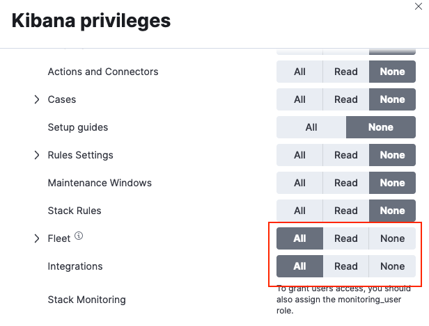
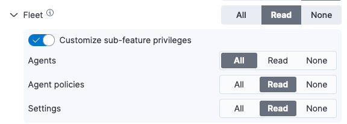
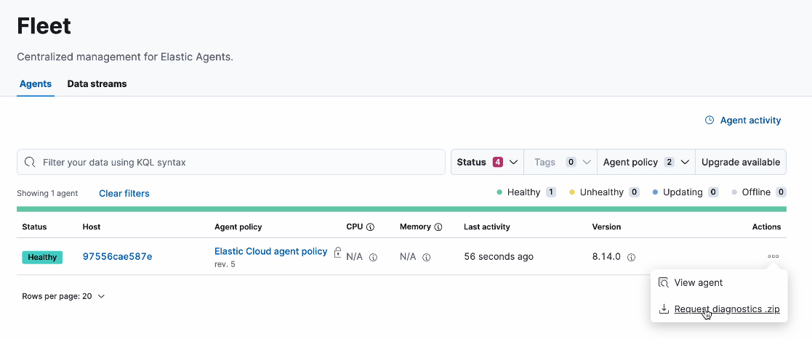
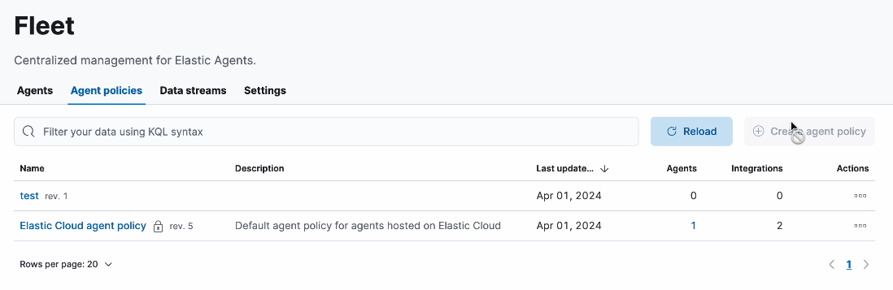
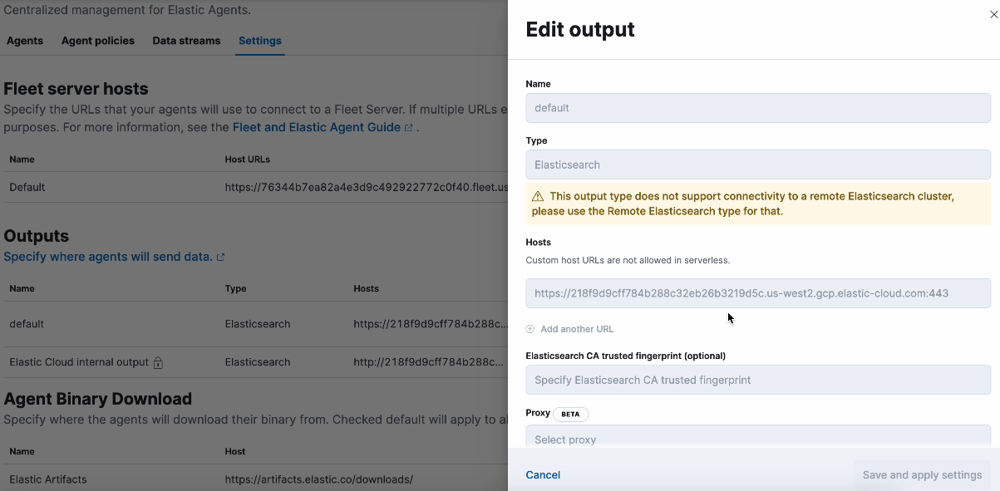
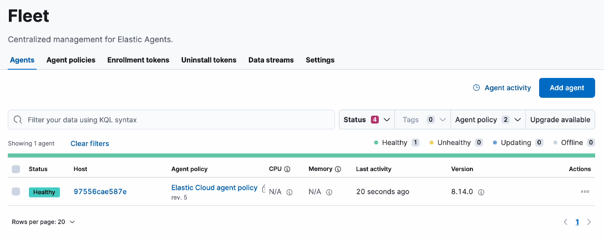

Roles and privileges
editRoles and privileges
editBeginning with Elastic Stack version 8.17, you can take much more granular control over the level of access that users have to features in and managed by Fleet. This is useful when people in your organization access Fleet for different purposes, and for whom you’d like to fine-tune the components that they can view and the actions that they can perform.
For both Fleet and integrations privileges can be set to:
-
all - Grants full read-write access.
-
read - Grants read-only access.
-
none - No access is granted.
Take advantage of these privilege settings by:
To configure access at a more granular level, select a custom set of privileges for individual Fleet features:
Built-in roles
editElasticsearch comes with built-in roles that include default privileges.
-
editor -
The built-in
editorrole grants the following privileges, supporting full read-write access to Fleet and Integrations:-
Fleet:
all -
Integrations:
all
-
Fleet:
-
viewer -
The built-in
viewerrole grants the following privileges, supporting read-only access to Fleet and Integrations:-
Fleet:
read -
Integrations:
read
-
Fleet:
You can also create a new role that can be assigned to a user, in order to grant more specific levels of access to Fleet and Integrations.
Create a new role for Fleet
editTo create a new role with access to Fleet and Integrations:
- In Kibana, go to Management → Stack Management.
- In the Security section, select Roles.
- Select Create role.
- Specify a name for the role.
- Leave the Elasticsearch settings at their defaults, or refer to Security privileges for descriptions of the available settings.
- In the Kibana section, select Add Kibana privilege.
- In the Spaces menu, select * All Spaces. Since many Integrations assets are shared across spaces, the users needs the Kibana privileges in all spaces.
- Expand the Management section.
-
Choose the access level that you’d like the role to have with respect to Fleet and integrations:
-
To grant the role full access to use and manage Fleet and integrations, set both the Fleet and Integrations privileges to
All.
-
To create a read-only user for Fleet and Integrations, set both the Fleet and Integrations privileges to
Read. -
If you’d like to define more specialized access to Fleet based on individual components, expand the Fleet menu and enable Customize sub-feature privileges.

Any setting specified here for individual Fleet components takes precedence over the general
All,Read, orNoneprivilege set for Fleet.Based on your selections, access to features in the Fleet UI are enabled or disabled for the role. Refer to customize access to Fleet features further in for details.
-
Once you’ve created a new role you can assign it to any Elasticsearch user. You can edit the role at any time by returning to the Roles page in Kibana.
Customize sub-feature privileges for Fleet
editWhen you create a new role or edit it, you can fine-tune the access level that it has for different features in Fleet. The Fleet UI varies depending on the privileges granted to the role.
Example 1: Read access for Elastic Agents
editSet Read access for Elastic Agents only:
-
Agents:
Read -
Agent policies:
None -
Settings:
None
With these privileges set the Fleet UI shows only the Agents and Data streams tabs. The Agent policies, Enrollment tokens, Uninstall tokens, and Settings tabs are unavailable.
The set of actions available for an agent are limited to viewing the agent and requesting a diagnostics bundle.

Change the agents access to All to enable the role to perform the full set of available actions on Elastic Agents.
Example 2: Read access for all Fleet features
editSet Read access for Elastic Agents, agent policies, and Fleet settings:
-
Agents:
Read -
Agent policies:
Read -
Settings:
Read
With these privileges set the Fleet UI shows the Agents, Agent policies, Data streams, and Settings tabs. The Enrollment tokens and Uninstall tokens tabs are unavailable.
The set of actions available for an agent are limited to viewing the agent and requesting a diagnostics bundle.
Agent policies can be viewed but a new policy cannot be created.

Fleet settings can be viewed but are non-editable.

Example 3: All access for Elastic Agents
editSet All access for Elastic Agents only:
-
Agents:
All -
Agent policies:
Read -
Settings:
Read
With these privileges set the Fleet UI shows all tabs.
All Elastic Agent actions can be performed and new agents can be created. Enrollment tokens and uninstall tokens are both available.

Access to Fleet settings is still read-only. To enable actions such as creating a new Fleet Server, the Fleet Settings privilege must be changed to All.
Fleet privileges and available actions
editThe following table shows the set of actions available when the read or all privilege is set for each Fleet feature.
| Component | read privilege |
all privilege |
|---|---|---|
Agents |
View-only access to Elastic Agents, including: |
Full access to manage Elastic Agents, including: |
Agent policies |
View-only access, including: * Agent policies and settings * The integrations associated with a policy |
Full access to manage agent policies, including: * Add an integration to a policy |
Fleet settings |
View-only access, including: * Configured Fleet hosts * Fleet output settings * The location to download agent binaries |
Full access to manage Fleet settings, including: |